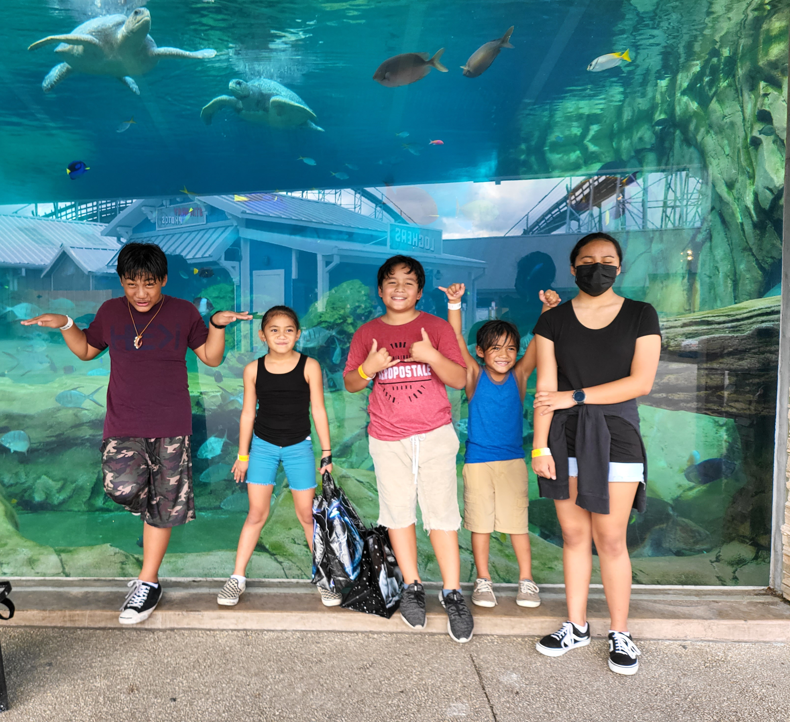
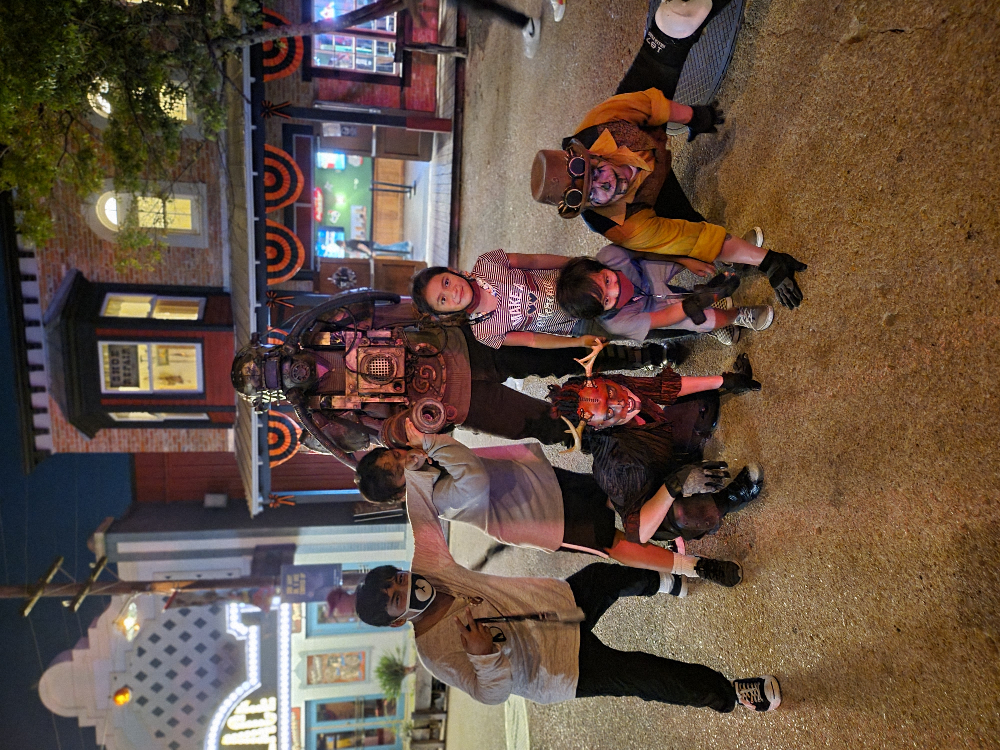

One of the things we love to do as a family is going out, every place that we have been we traveled to see what’s there to see. Our kids loved this because they were able to see new places, try new things, and have fun memories with the family.

Point Defiance Zoo
Trips to the Zoo
My family loves all types of animals, from flying animals, land-based animals, or the animals of the sea, they love them all. Every state that we have visited we make it our goal to make a trip to the zoo, not once, not twice, but at least once a month. Because my family loves animals so much we have one dog, and two cats.

Six Flags, TX.
Amusement parks
Amusement parks are one of the best places to have a family outing. We have been to multiple parks as a family. Six flags have got to be their favorite one. We would love to go to different parks especially during the holidays to see the different costumes.